Khung tia nước Water Laser (ống 4 lớp thở nhịp, phóng mảnh rồi phình, lưỡi liềm ôm thân, xoắn dọc thân, chỗ trúng lặp 0,2 s: chớp, gai sắc,
toé sao) tô bằng bảng màu theo hệ; hạt nước (giọt, bong bóng, mưa) thay bằng tia vụn, lá, than lửa. Shader PokiClash/UIWaterFx, mã HatTiaLaser.cs.
Tốc thường
Như trong trận (ảnh ~0,1 s một khung).
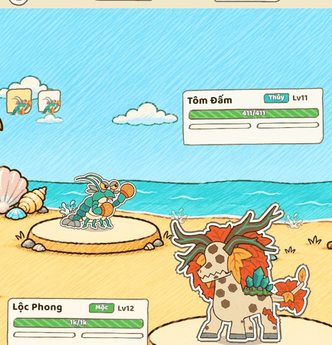
Lộc Phong · dạng 2 · Chiêu mana 23 khung · bảng lục ngọc, cầu cau_moc, lá phong cuốn theo
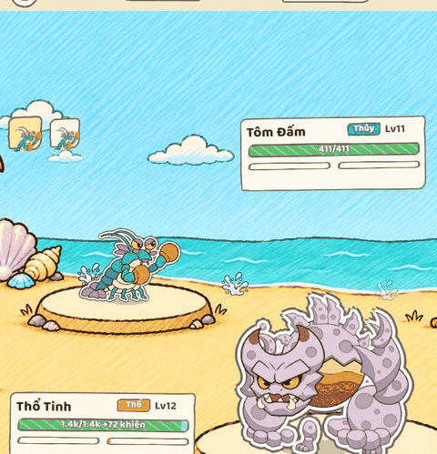
Thổ Tinh · dạng 1 · Chiêu cuối 30 khung · Mặt Trời to ×2, thẳng trên vỏ đá; tia nhiệt dày gần bằng Mặt Trời, giữ qua vụ nổ
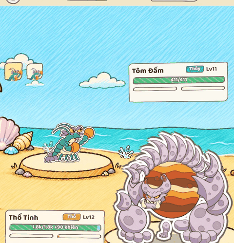
Thổ Tinh · dạng 2 · Chiêu cuối 31 khung · Mặt Trời to ×2, thẳng trên vỏ đá; tia nhiệt dày gần bằng Mặt Trời, giữ qua vụ nổ
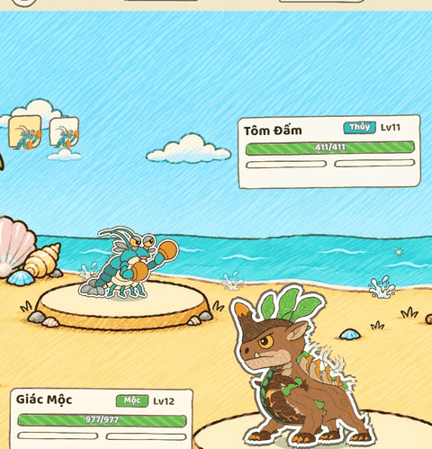
Giác Mộc · dạng 1 · Chiêu cuối 37 khung · tia dày từ tim, nổ cầu cuối
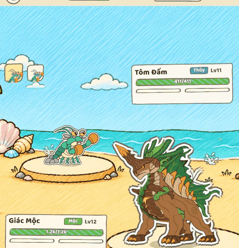
Giác Mộc · dạng 2 · Chiêu mana 24 khung · bảng hổ phách, cầu cau_vang ở đỉnh sừng
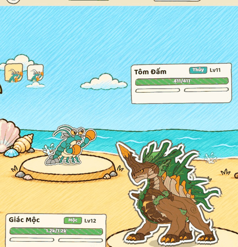
Giác Mộc · dạng 2 · Chiêu cuối 36 khung · tia dày từ tim, nổ cầu cuối
Chạy chậm 0,4×
Đồng hồ sân và clip tướng cùng chậm: soi từng pha tụ → phóng mảnh → phình → dội → tắt.
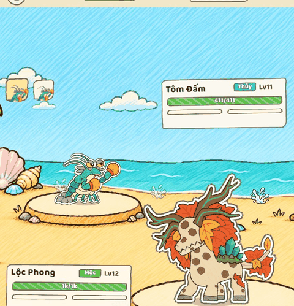
Lộc Phong · dạng 2 · Chiêu mana 40 khung · bảng lục ngọc, cầu cau_moc, lá phong cuốn theo
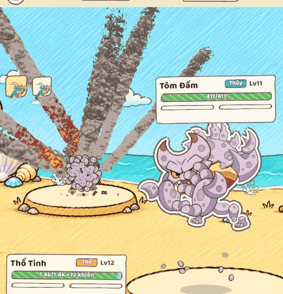
Thổ Tinh · dạng 1 · Chiêu cuối 24 khung · Mặt Trời to ×2, thẳng trên vỏ đá; tia nhiệt dày gần bằng Mặt Trời, giữ qua vụ nổ
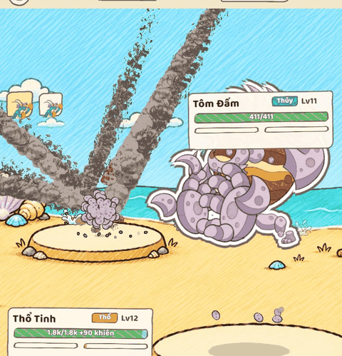
Thổ Tinh · dạng 2 · Chiêu cuối 23 khung · Mặt Trời to ×2, thẳng trên vỏ đá; tia nhiệt dày gần bằng Mặt Trời, giữ qua vụ nổ
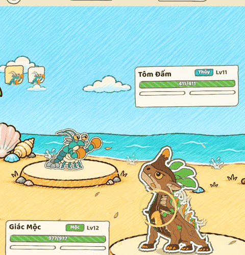
Giác Mộc · dạng 1 · Chiêu cuối 38 khung · tia dày từ tim, nổ cầu cuối
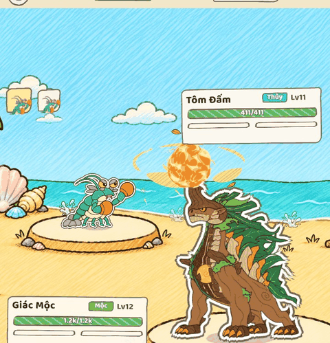
Giác Mộc · dạng 2 · Chiêu mana 30 khung · bảng hổ phách, cầu cau_vang ở đỉnh sừng
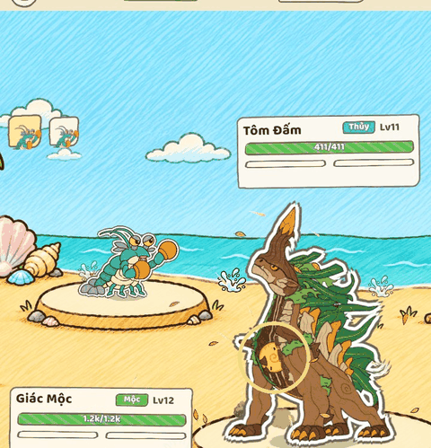
Giác Mộc · dạng 2 · Chiêu cuối 39 khung · tia dày từ tim, nổ cầu cuối
Tia nước gốc để so
Tia Water Laser của bộ nước (Giông Bão), chụp lại sau khi shader có bảng màu.
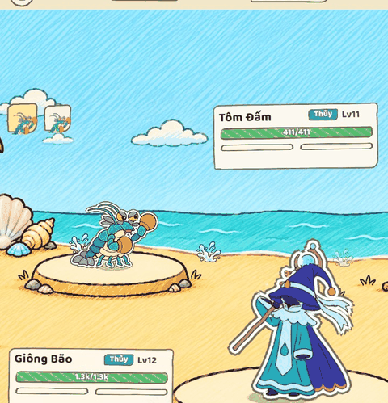
Giông Bão · dạng 2 · Chiêu mana 24 khung · tia nước Water Laser gốc (bảng 0, không đổi)